Двоичная система счисления - удобная система счисления для применения на компьютерах, передающих даные в форме электрических сигналов 11011 = изменение изменение пустота изменение изменение и т.п.
Двоичная система счета - самая компактная система счета на пальцах.
Используя разгибание и загибание десяти пальцев двух рук, двоичная система счета может давать возможность однозначно отображать целые неотрицательные числа промежутка 0...1023 включительно.
| десять пальцев двух рук |
 |
 |
| номер пальца |
10 |
9 |
8 |
7 |
6 |
5 |
4 |
3 |
2 |
1 |
| 2x |
29 |
28 |
27 |
26 |
25 |
24 |
23 |
22 |
21 |
20 |
| десятичный аналог |
512 |
256 |
128 |
64 |
32 |
16 |
8 |
4 |
2 |
1 |
| двоичная запись |
1 |
1 |
1 |
1 |
1 |
1 |
1 |
1 |
1 |
1 |
1111111111
2=
2
109+
2
108+
2
107+
2
106+
2
105+
2
104+
2
103+
2
102+
2
101+
2
100=
512
10+256
10+128
10+64
10+32
10+16
10+8
10+4
10+2
10+1
10=1023
10.
0000000000
2=0
10=
0
10+0
10+0
10+0
10+0
10+0
10+0
10+0
10+0
10+0
10=0
10.
| десятичное 2x |
точечный образ |
двоичная форма |
десятичная формула |
множители |
| 20 |
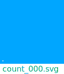 |
1 |
20 = 1 |
21*2-1 |
| 21 |
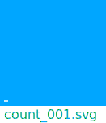 |
10 |
21 = 2 |
2 |
| 22 |
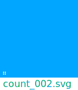 |
100 |
22 = 4 |
2*2 |
| 23 |
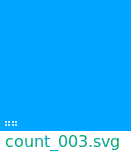 |
1000 |
23 = 8 |
2*2*2 |
| 24 |
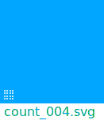 |
10000 |
24 = 16 |
2*2*2*2 |
| 25 |
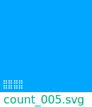 |
100000 |
25 = 32 |
2*2*2*2*2 |
| 26 |
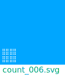 |
1000000 |
26 = 64 |
2*2*2*2*2*2 |
| 27 |
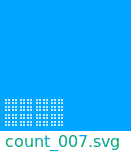 |
10000000 |
27 = 128 |
2*2*2*2*2*2*2 |
| 28 |
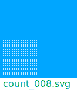 |
100000000 |
28 = 256 |
2*2*2*2*2*2*2*2 |
| 29 |
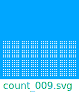 |
1000000000 |
29 = 512 |
2*2*2*2*2*2*2*2*2 |
| 210 |
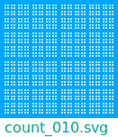 |
10000000000 |
210 = 1024 |
2*2*2*2*2*2*2*2*2*2 |
Двоичные аналоги чисел 0...1023 (1024 числа) десятичной системы возможно однозначно показывать разгибанием десяти пальцев двух рук.
При использовании двоичной системы счисления для счета на пальцах неудобство может возникнуть не только от сложности образного представления количества единиц, которые нужно продемострировать и от вычисления положения пальцев, но и от процеса разгибания пальцев.
Не все пальцы руки могут с одинаковой легкостью разгибаться независимо от других пальцев руки.
Неудобство двоичной системы счета - отсутствие именованых образов количественых собирателей единиц, подобно десяткам, сотням, тысячам в десятичной системе счета.
В результате, в процесе счета подсознательно используются десятичные числа и постояно производится пересчет между системами счета.
Сложность естественого образования двоичной системы счета связана с отсутствием единичных последовательно-увеличивающихся образов для количества больше единицы, при последовательном счете с использованием разгибания десяти пальцев двух рук.
В результате нарушаются последовательные асоциации (количество увеличилось, значит число разогнутых пальцев тоже увеличилось).
Появляется необходимость использвать дополнительные арифметические операции в десятичной системе, для отображения количества единиц в двоичной системе счета.
Нижний образ расмотрел - столько ... поимел.
Глянул мельком и забыл - мыло в бане уронил.